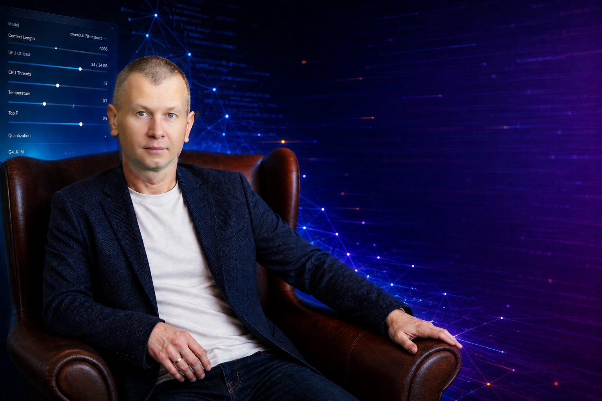

可解释人工智能
Explainable AI、模型可解释性、解释质量评估，以及理解算法预测的局限。
创办人 · AI RESEARCH DCH SCHOOL
AI Research DCH School 创办人
我创建这所学校，希望建立一个循序渐进学习人工智能的空间——从机器学习基础，到研究神经网络的内部机制，再到构建自己的 AI 系统。
学习不应止于使用现成工具。我们希望理解模型如何工作、回答依据什么产生、如何评估解释，以及怎样把知识转化为真正可用的解决方案。

研究方向
这三个领域构成了 AI Research DCH School 的课程体系。
Explainable AI、模型可解释性、解释质量评估，以及理解算法预测的局限。
机制可解释性、内部表征、circuits，以及研究模型如何生成输出。
本地语言模型、RAG、系统集成、工具，以及应用型 AI 系统的开发。
创办学校的初衷
AI Research DCH School 倡导研究型学习方式：掌握基础知识、提出假设、开展实验、评估结果，并坦诚面对技术局限。因此，课程结合理论、实践任务、可视化解释和知识自测。我们的目标是帮助学习者从简单使用 AI 工具，走向有判断力、能独立开展工作的阶段。